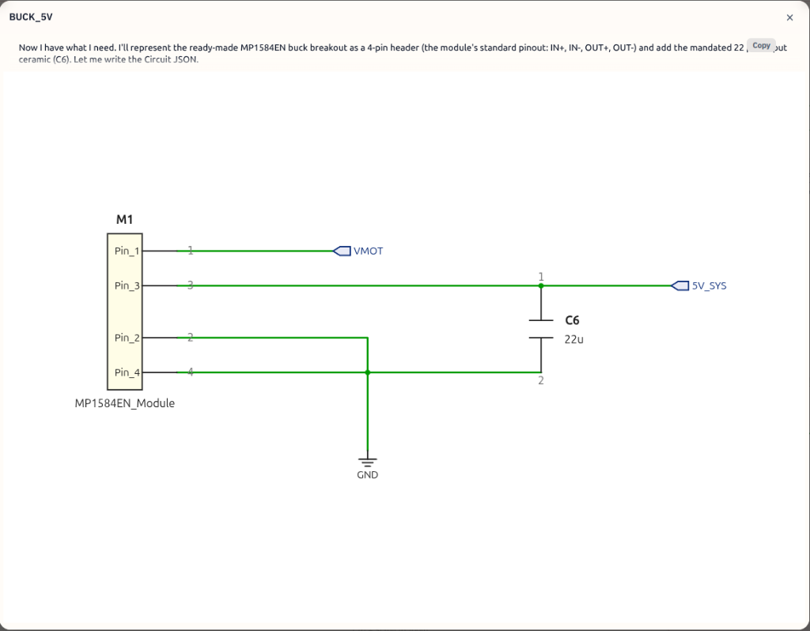
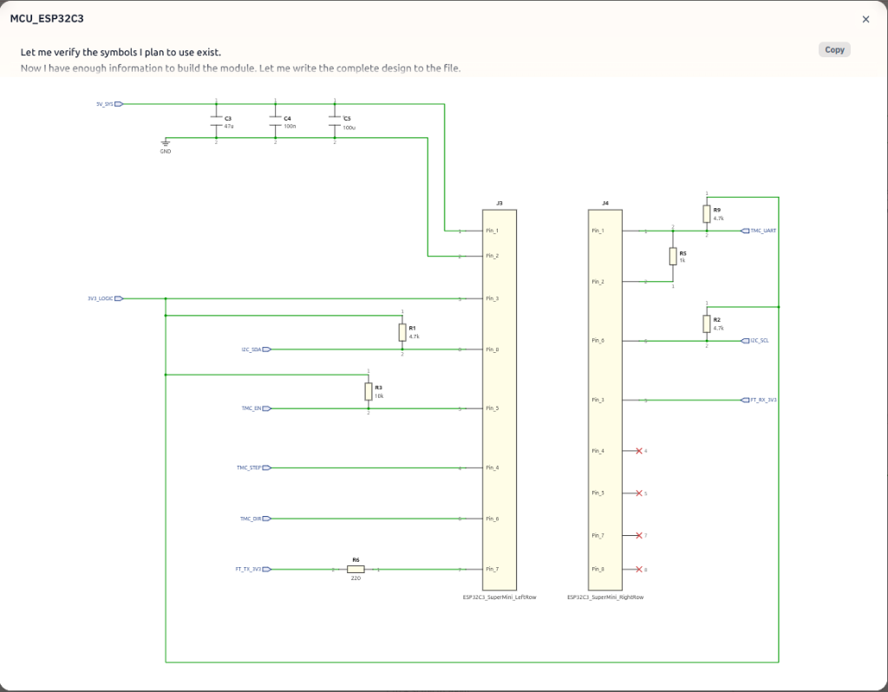
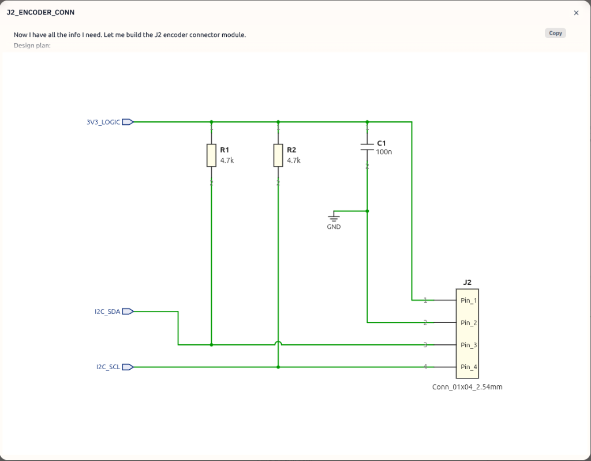
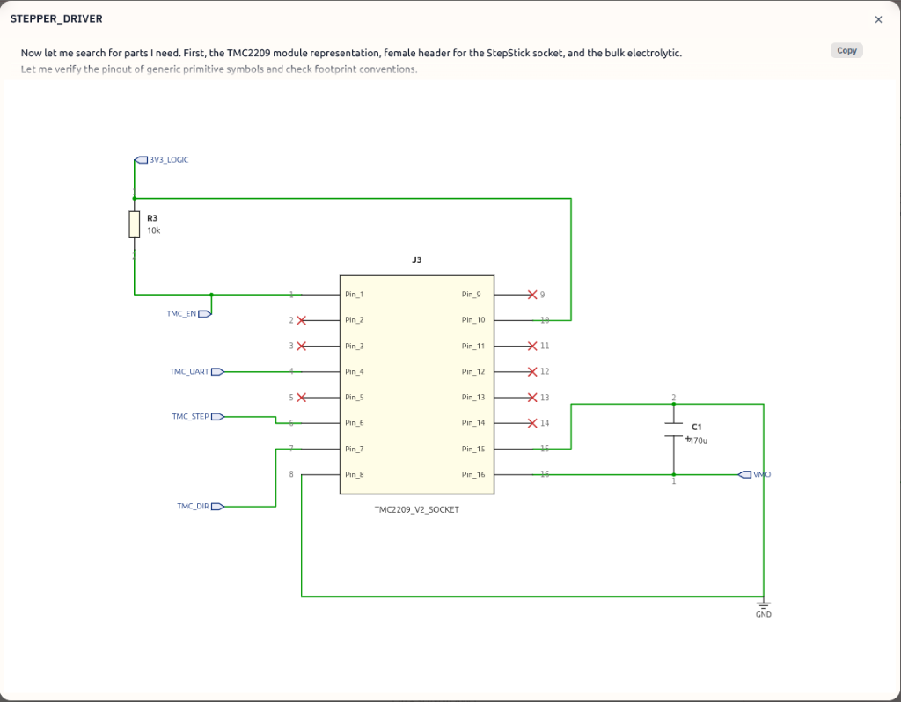
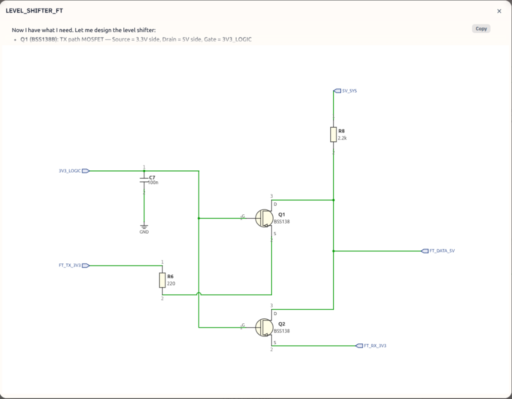

Vollständiger KiCad-Schaltplan
| Versorgung | Spannung | Zweck |
|---|---|---|
VMOT | 12V – 24V | Motorversorgung TMC2209 |
+5V_SYS | 5V | ESP32, Level Shifter HV |
+3V3_LOGIC | 3.3V | AS5600, TMC VIO, Pullups |
| Netzname | Funktion |
|---|---|
VIN_MOTOR | 12–24V Eingang |
VMOT | Motorversorgung TMC2209 |
+5V_SYS | 5V Versorgung |
+3V3_LOGIC | 3.3V Logik |
GND | Masse |
TMC_UART | UART Verbindung TMC |
I2C_SDA | I2C Daten |
I2C_SCL | I2C Clock |
FEETECH_DATA | Half Duplex Servo Bus |
D1 – SMBJ24A TVS-Diode
C1 – 470µF / 50V Low ESR
C2 – 100nF Keramik
U4 – MP1584EN
C6 – 22µF Keramik

U1 – ESP32-C3 Super Mini
| ESP32 Pin | Verbindung |
|---|---|
| 5V | +5V_SYS |
| GND | GND |
| 3V3 | +3V3_LOGIC |

| Bauteil | Wert | Anschluss |
|---|---|---|
| C3 | 47µF X7R 1206 | +5V_SYS → GND |
| C4 | 100nF | +5V_SYS → GND |
| C5 | 100µF | +5V_SYS → GND |
U3 – AS5600
| Pin | Verbindung |
|---|---|
| VCC | +3V3_LOGIC |
| GND | GND |
| Pin | Verbindung |
|---|---|
| SDA | GPIO 0 |
| SCL | GPIO 10 |
| Bauteil | Wert | Anschluss |
|---|---|---|
| R1 | 4.7kΩ | SDA → +3V3_LOGIC |
| R2 | 4.7kΩ | SCL → +3V3_LOGIC |
| C7 | 10µF Keramik | +3V3_LOGIC → GND |

U2 – TMC2209
| Pin | Verbindung |
|---|---|
| VM | VMOT |
| GND | GND |
| VIO | +3V3_LOGIC |
| Pin | Verbindung |
|---|---|
| STEP | GPIO 4 |
| DIR | GPIO 2 |
| Pin | Verbindung |
|---|---|
| EN | GPIO 3 |
R3 – 10kΩ Pullup: EN → +3V3_LOGIC
| Bauteil | Wert | Anschluss |
|---|---|---|
| R5 | 1kΩ | GPIO 6 → PDN_UART |
| R9 | 4.7kΩ | PDN_UART → +3V3_LOGIC |

J2 – Stepper Connector
| Pin | Verbindung |
|---|---|
| 1 | A1 |
| 2 | A2 |
| 3 | B1 |
| 4 | B2 |
U5 – BSS138 Level Shifter
| Pin | Verbindung |
|---|---|
| LV | +3V3_LOGIC |
| GND | GND |
| LV1 | GPIO 1 über R6 |
| LV2 | GPIO 7 |
| Pin | Verbindung |
|---|---|
| HV | +5V_SYS |
| HV1 | FEETECH_DATA |
| HV2 | FEETECH_DATA |
FEETECH_DATA verbunden.| Bauteil | Wert | Anschluss |
|---|---|---|
| R6 | 220Ω | GPIO 1 → LV1 (Serienwiderstand) |
| R8 | 2.2kΩ | FEETECH_DATA → +5V_SYS (Bus Pullup) |
| Pin | Verbindung |
|---|---|
| 1 | GND |
| 2 | +5V_SYS |
| 3 | FEETECH_DATA |

GPIO18 und GPIO19 nicht verbinden.
Keine Leiterbahnen. Keine Pullups. Keine Testpads.
| Bauteil | Footprint |
|---|---|
| 0603 Widerstände | R_0603_1608Metric |
| 100nF | C_0603_1608Metric |
| 10µF | C_0805_2012Metric |
| 47µF | C_1206_3216Metric |
| 470µF Elko | CP_Radial_D10.0mm_P5.00mm |
| TVS | D_SMB |
| TMC2209 Modul | PinSocket_2x08_P2.54mm |
| ESP32-C3 | Custom Module Footprint |
| Signal | Breite |
|---|---|
| Logic | 0.20mm |
| 5V | 0.50mm |
| VMOT | 1.20mm |
| Motorphasen | 1.50mm |
| Parameter | Empfehlung |
|---|---|
| Layer | 2 Layer ausreichend, 4 Layer empfohlen |
| Kupfer | 1oz Minimum |
| Substrat | 1.6mm FR4 |
Kann direkt als Grundlage für ein vollständiges KiCad-Projekt verwendet werden.
SmartServoStepperV2 – Verifiziert gegen Firmware (Mai 2026)